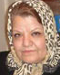

|
|
|
Browsing
Contact Us |
Campaigners |
Face to Face |
Tribune |
Interview |
News |
On the Web |
One Million |
Report
Farsi | Français | German | Italian | Spanish | العربية Also in this section
|
 One Million Signatures Campaign Aims to Promote Equality Collection of Signatures is not a CrimeThursday 12 July 2007 Translated by: Farzad K Change for Equality: In response to the arrest of two members of the One Million Signatures Campaign, in April 2007, the site Change for Equality which is dedicated to reflecting developments and debate with respect to the Campaign, conducted an interview with Farideh Gheirat, a lawyer and human and women’s rights defender. In this interview Ms. Gheirat claimed that: "gathering signatures in support of the Campaign which asks for changes in laws discriminating against women, is not a crime and charging these women with actions against the state or other security charges is pointless.” Ms. Gheirat who is a member of the Iranian Bar Association continued further to explain that: "the Campaign and its goals can in no way be viewed as criminal. The mission of the Campaign, which has been outlined in its petition, is clear. Neither I as a signatory to the petition, nor others who understand the law, could possibly view such an effort as an act against national security. In fact, the goal of the campaign is merely to change the law in the direction of equality rather than creating regime change." This member of the Society for Defense of Prisoner’s Rights condemned the recent arrest of Nahid Keshavaraz and Mahboubeh Hosseinzadeh in April 2006, while collecting signatures in support of the Campaign. She further criticized their prison conditions, as well as the miserable condition of female prisoners in general. “We have for years consistently worked to promote a culture of respect for prisoners and their rights in our own NGO. Additionally, we have repeatedly requested from authorities within the judiciary and the Organization of Prisons, to pave the way for service delivery and support by NGOs to female prisoners. Unfortunately, officials have not been eager to allow us such access and have not allowed us to participate in efforts to improve the condition of female prisoners.” Female prisons have however been frequently opened to visits by representatives of International organizations. Despite this fact, involvement of national organizations in prison administration, provision of support to prisoners and even visits of female prisoners has been consistently refused. In this interview, Ms. Gheirat explained that in a private meeting, Grand Ayatollah Sanei, had indicated that with the exception of women’s inheritance, Islam does not differentiate between men and women with respect to their rights. Gheirat explained further that "certainly women seeking equal rights do not object to the Islamic nature of their government, but do want to know why it is that despite having a progressive tool such as Faq-e Pooya “dynamic jurisprudence” [which allows for the revision of Islamic law to meet the requirements of place and time] we choose the most conservative interpretations of Islam. It is not just women’s rights activists who object to this discriminatory view-point, but also religious scholars, and jurists, including Marjah Taghlids (sources of emulation)1 believe that these interpretations can be changed to meet the specific needs of society. In this way, we can provide a more progressive picture of Islamic law." Ms. Gheirat continued by pointing to the fact that in today’s society, jurists and religious scholars have access to the most updated of communication technologies, including the internet. "I hope that they use these technologies to gain better understanding about the world in which they live and that they come to the conclusion that in this day and age, discrimination against women can no longer be tolerated." 1. Marjeh Taghlid (source of emulation) is a religious authority who can issue a fatwa (religious decree) in offering new interpretations on Shari’a law. |